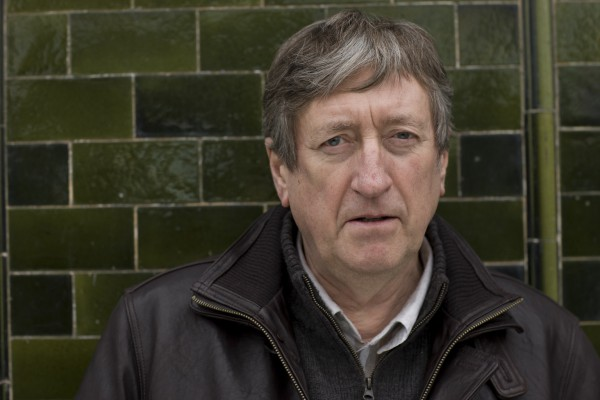

#2292 Brassed Off - Mit Pauken und Trompeten
Alternativ: Brassed Off


 IMDB-Wertung: 7.1 / 10
IMDB-Wertung: 7.1 / 10  Metascore: 60
Metascore: 60 
Der ganze Stolz der Gemeinde Grimley in der Grafschaft Yorkshire ist die traditionsreiche Blaskapelle. Dank ihres engagierten Dirigenten Danny haben die Hobby-Musiker sogar Chancen, das Finale des diesjährigen Blasmusik-Wettbewerbs zu erreichen. Als die Londoner Regierung ihre Arbeitsstätte, die Zeche von Grimley, schließen will, beginnen die von Existenzangst geplagten Kumpel, das Interesse an der Blaskapelle zu verlieren. Doch da wird die äußerst hübsche Flügelhornistin Gloria als erstes weibliches Mitglied aufgenommen
Jahr: 1996
Dauer: 107 Minuten
FSK: 12
Land: England Studio: Arthaus FilmverleihTonspuren:
Untertitel: Deutsch,
Auflösung: 1080p (1920x1080) Größe: 10649 MB
Genre: Drama, Komödie, Liebe
Regisseur: Mark Herman
Drehbuch: Mark Herman
Soundtrack: Trevor Jones
Darsteller:
 Pete Postlethwaite als Danny
Pete Postlethwaite als Danny Tara Fitzgerald als Gloria
Tara Fitzgerald als Gloria Ewan McGregor als Andy
Ewan McGregor als Andy- Stephen Tompkinson als Phil
 Jim Carter als Harry
Jim Carter als Harry-  Philip Jackson als Jim
- Sue Johnston als Vera
- Mary Healey als Ida
- Melanie Hill als Sandra
- Bernard Wrigley als Chapman
- Adrian Hood als Heavy 2
 Adam Fogerty als Miner
Adam Fogerty als Miner- Peter Martin als Ernie
- Lill Roughley als Rita
- Peter Gunn als Simmo
- Stephen Moore als McKenzie
 Kenneth Colley als Greasley
Kenneth Colley als Greasley- Olga Grahame als Mrs. Foggan
- Toni Galacki als Gary
- Sky Ingram als Kylie
- Luke McGann als Shane
- Christopher Tetlow als Craig
- Ken Kitson als Heavy 1
- Sally Sheridan als Ward Sister
- Tubby Andrews als Bus Driver
- Katherine Dow Blyton als Nurse
- Vanessa Knox-Mawer als Mother 2
- Sally Ann Matthews als Waitress
- Jacqueline Naylor als Mother 1
- Bob Rodgers als Halifax Judge
- Max Smith als Nightwatchman
- Ronnie Stevens als Albert Hall Judge
- Peter Wallis als Elderly Man
- Robert Archer als Grimley Colliery Band
- Andrew Armstrong als Grimley Colliery Band
- David Arnold als Grimley Colliery Band
 Mark Arnold als Grimley Colliery Band
Mark Arnold als Grimley Colliery Band- David Barraclough als Grimley Colliery Band
- Jonathan Beatty als Grimley Colliery Band
- Roy Bowater als Grimley Colliery Band
- Colin Brook als Grimley Colliery Band
- Duncan Byers als Grimley Colliery Band
- Malcolm Clegg als Grimley Colliery Band
- Paul Davies als Grimley Colliery Band
- David Essex als Grimley Colliery Band
- Charles Faulkner als Grimley Colliery Band
- Andrew Hirst als Grimley Colliery Band
- Alan Hobbins als Grimley Colliery Band
- Cliff Hopes als Grimley Colliery Band
- Paul Hughes als Grimley Colliery Band
Datei: X:\1996\Brassed Off - Mit Pauken und Trompeten (1996, FSK12, 1920x1080).mkv seit 26.10.2015
Festplatte: HD 1996-2002
 Es gibt insgesamt 78 Filme in der Gruppe '1996'
Es gibt insgesamt 78 Filme in der Gruppe '1996'